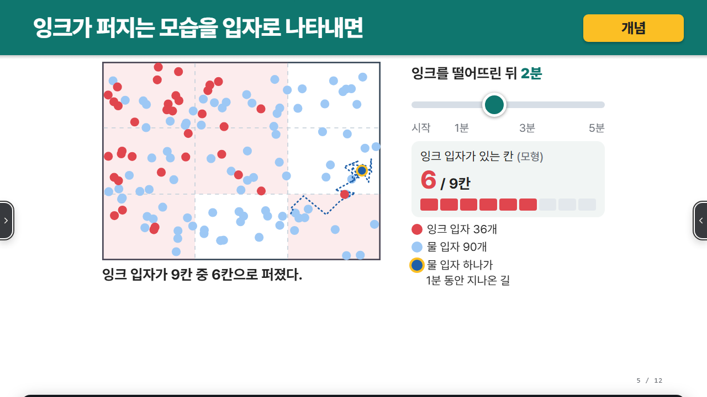
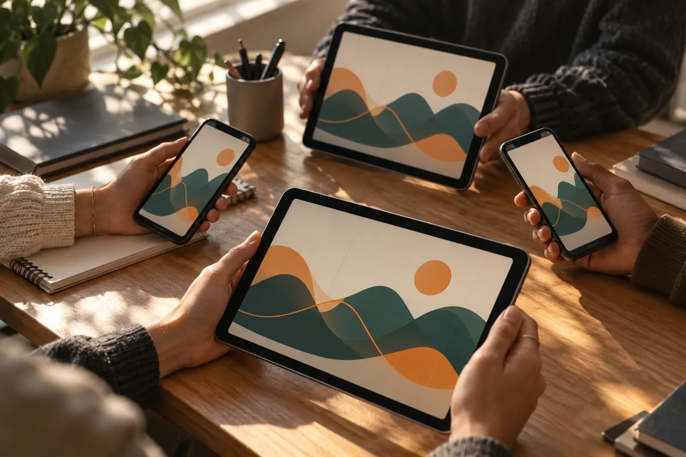
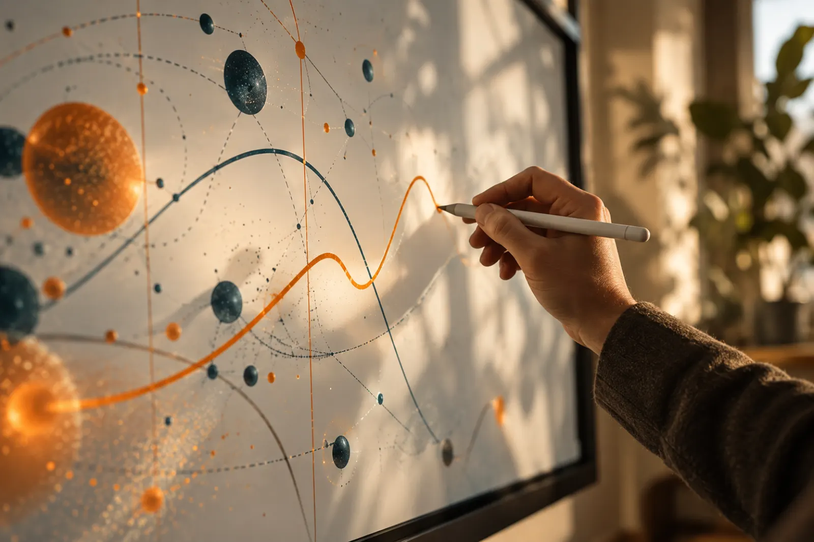

교실에 필요한 도구를수업 파일 하나에 담았어요
수업을 준비할 때마다 여러 도구를 이어 붙이지 않아도 돼요. 학생 활동부터 전자칠판 기능까지 파일 하나에 모두 들어 있어요.
- PPT로 시작해요
- 학생이 직접 골라요
- 교실 화면에서 함께 봐요
멈춰 있던 PPT 한 장이살아 움직이는 수업으로


눈으로만 보던 PPT가 학생이 직접 값을 바꿔 보는 화면이 돼요. 수치를 바꾸면 그림과 그래프가 따라 움직여 원리가 한눈에 보여요. 같은 화면을 보며 각자 찾은 값과 생각을 나눠 보세요.
- 학생이 값을 바꿔요
- 응답을 한눈에 모아 봐요
- 판서가 학생 기기에도 떠요
PPT와 평소 쓰던 AI로HTML 자동 생성 및 편집
쓰던 AI에 지침 주소와 PPT를 건네면 AI가 먼저 수업 방향을 묻고 설계표를 보여 줘요. 완성된 파일은 편집 모드에서 바로 고쳐 저장할 수 있어요.
- 교과와 차시를 묻는 AI 질문
- 한눈에 확인하는 설계표
- 글과 상자, 그림과 도형 편집 및 자동 점검
영상 준비 중
영상 탭에서 만드는 과정을 보고 체험 탭에서 직접 고쳐 보세요.
값을 바꾸면 바로 반응하는익스플로라그램 탑재
학생이 값을 바꾸거나 점을 끌어 옮기면 그림과 수치, 그래프가 그 자리에서 바뀌어요. 시간에 따라 퍼져 나가거나 한 단계씩 열리는 장면도 넣을 수 있어요.
- 계산 상자와 그래프
- 입자 움직임과 재생
- 지도와 연표, 확인 활동
영상 준비 중
영상 탭에서 움직이는 장면을 보고 체험 탭에서 직접 값을 바꿔 보세요.
선생님과 학생 화면을 잇는실시간 수업
「실시간」을 누르면 코드와 QR이 바로 떠요. 학생 기기는 선생님 화면을 따라 움직이고 학생이 보낸 답은 이름 없이 한곳에 모여요.
- 슬라이더 값과 퀴즈 답 모으기
- 투표와 짧은 답 함께 보기
- 선생님 판서를 학생 화면에 띄우기

영상 준비 중
영상 탭에서 연결 과정을 보고 체험 탭에서 선생님과 학생 화면을 비교해 보세요.
펜을 쥔 채 바로 넘기는전자칠판 기능 탑재
펜을 내려놓지 않고도 다음 장으로 넘어가고 활동 단추를 누를 수 있어요. 판서는 장마다, 반마다 따로 남고 칠판이나 레이저 도구도 바로 꺼내 써요.
- 장마다 반마다 판서 저장
- 칠판과 레이저, 타이머
- 발표자 뽑기와 모둠 점수판, 체크리스트

영상 준비 중
영상 탭에서 수업 장면을 보고 체험 탭에서 전자칠판 도구를 직접 골라 보세요.
우리 반 수업도쓰던 PPT로 시작해요
익숙한 AI에 PPT를 올리고 몇 가지 질문에 답해 설계표를 확인해 보세요. 완성된 파일을 받아 바로 수업을 열 수 있어요.
- 세 단계로 만들기
- 예시 수업 둘러보기